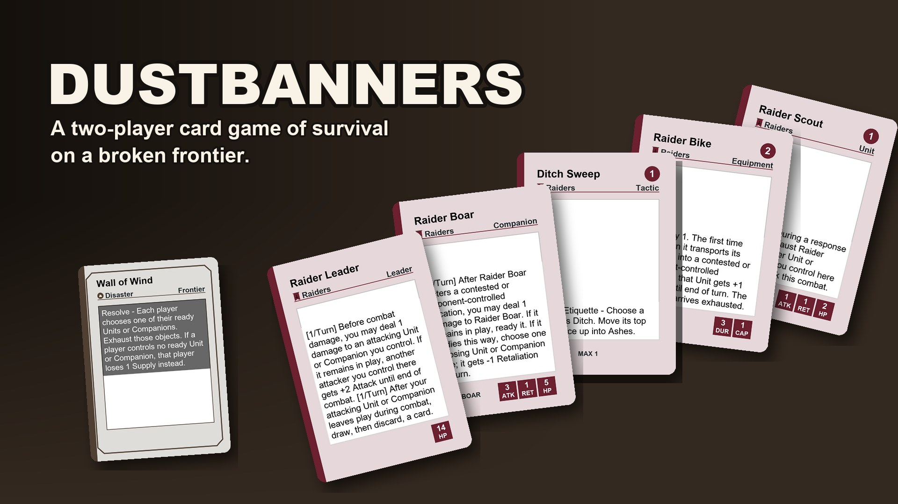
Get one email the day it launches: sign up for news. Want to help test the game? Help playtest.
Get email news
Sign up and we will email you Dustbanners news: the day the Kickstarter launches, when the print-and-play is ready, and news from playtests and the world of the game. We only send news, and we never sell your email.
You will get one email first to confirm. Every email has an unsubscribe link at the bottom: one click and you are off the list. Read our privacy notice.
The game
Dustbanners is a two-player card game of survival on a broken frontier. Each of you leads a faction into a valley of nine places. Plan with your own deck, deal with a shared Frontier Deck of storms, finds and trouble, and win by breaking the enemy Leader or holding eight of the nine places.
- 2 players, ages 14 and up.
- The first box has two factions: the Wardens (“How do we protect what’s ours?”) and the Raiders (“What can we take?”). Each Banner has two Leaders and two Companions to choose from.
- Two ways to win, and both are always open: break the enemy Leader, or hold 8 of the 9 places at the end of any turn.
- The Frontier Deck turns up something every turn (a storm, a wild animal, a find) that both of you have to deal with.
- No random packs. Every box has the same cards.
- More factions to come.
If you like…
- Magic: The Gathering, but want fixed boxes, a simpler resource (we call it Supply), and a world whose story grows with every season.
- Android: Netrunner, for two sides that play differently, no random packs, and a frontier with its own history to read.
- KeyForge, for decks that are ready to play out of the box.
- Marvel Champions, for fixed expansions instead of boosters, each one a new chapter of the story.
- Root, for factions that feel nothing alike, each with its own people, places and sayings.
- Arcs, for card-driven strategy in a world you can read as deep as you like.
Those games belong to their makers. Dustbanners is not connected to any of them.
A printed test copy is being made, and a print-and-play version is coming.
The cards
Every card in the first box is one of these eight kinds. Here is one of each, with its real rules text. The names are plain stand-ins for now. When the AI art is on, the pictures in the cards are AI-made placeholders. Use the “AI art” button at the top to swap them for empty boxes. The final art is coming from human artists.
-
Leader
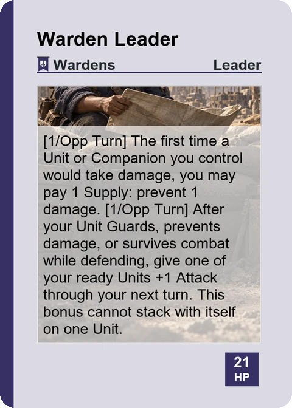
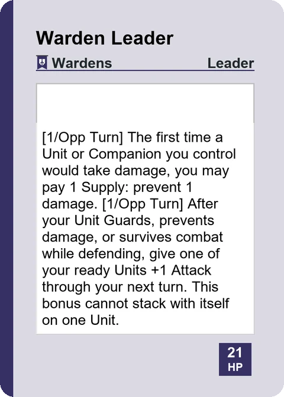
Your Leader leads your Banner. If your Leader is defeated, you lose.
-
Companion
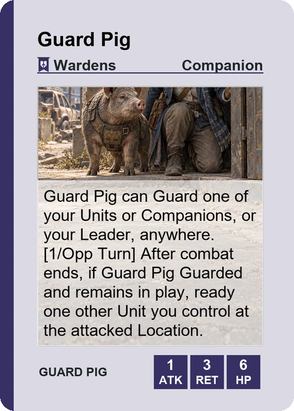
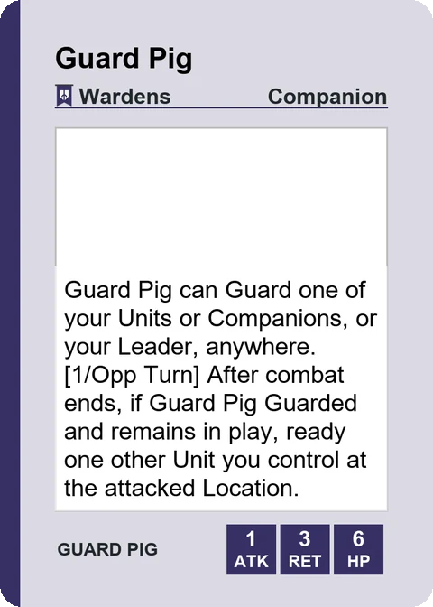
A Companion is an animal or a person who fights beside your Leader. If it is defeated, you can bring it back.
-
Unit
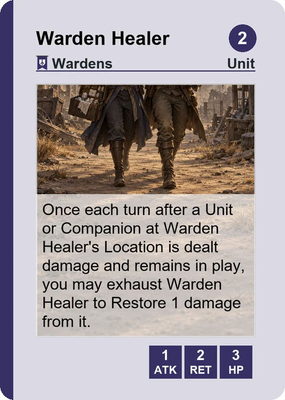
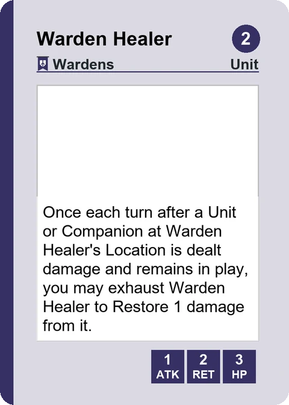
Units are your Banner’s people. They move, attack, defend and capture places.
-
Tactic
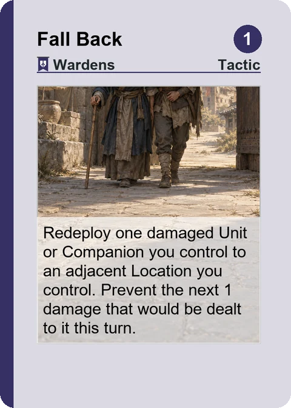
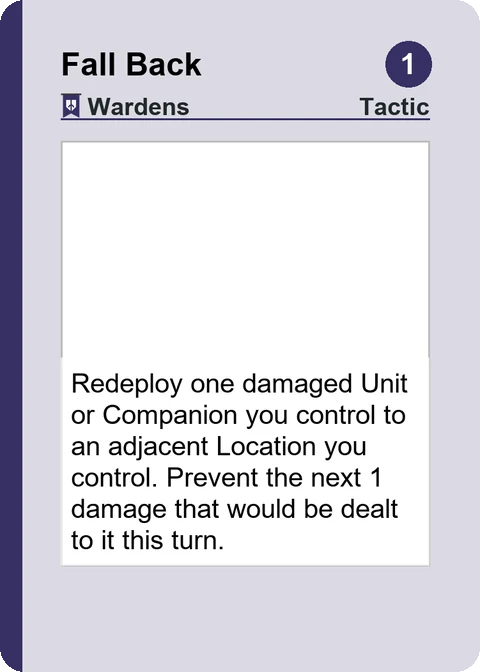
A Tactic is a one-time action. Do what it says, then put it in your discard pile, the Ditch.
-
Equipment
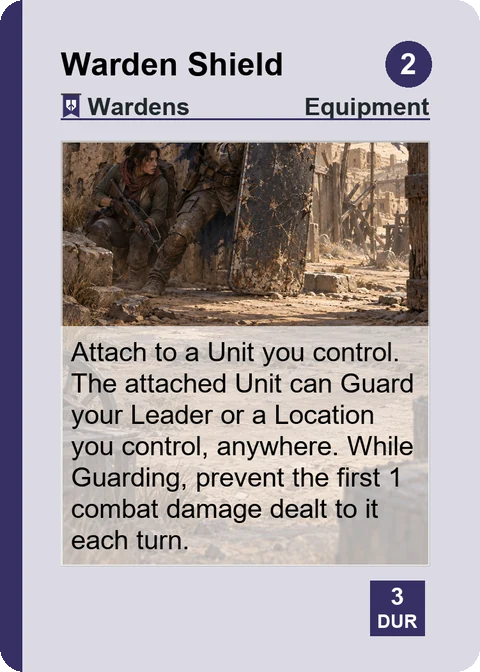
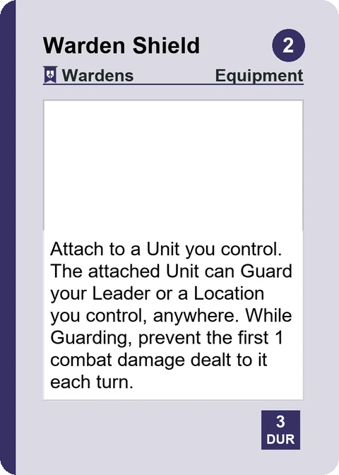
Equipment is gear. It goes on a card it names, or it sits at a place you control.
-
Structure
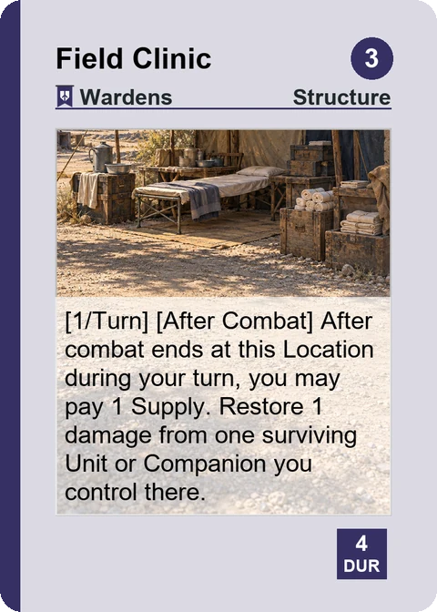
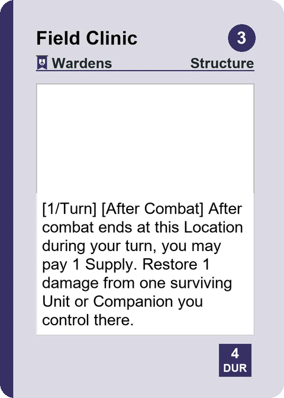
A Structure is something you build at a place you control.
-
Battlefield Location
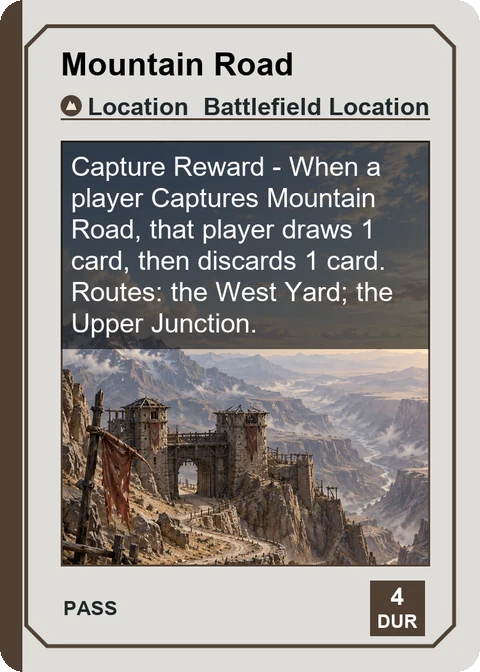
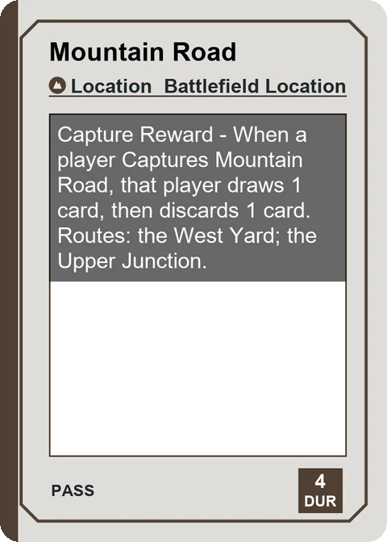
A Location is one of the nine places on the map. Hold 8 of the 9 at the end of any turn to win.
-
Frontier card
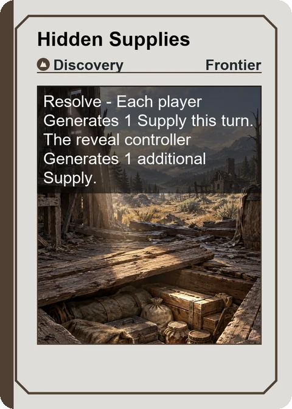
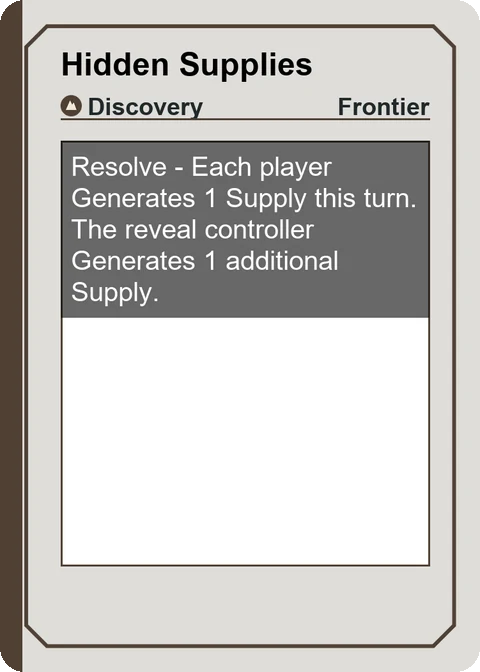
Frontier cards come from the shared deck. Storms, finds, animals and trouble happen to both of you.
Placeholder art (AI-made). Final art by human artists.
Help playtest
More than 17,000 simulated games played so far, computer against computer, to balance the cards before anyone sits down at a table.
Dustbanners is still being tested. If you have played it, or want to help us test it, tell us what worked, what confused you and what you would change. Your answers go straight into the next round of fixes.
The test build still uses hold 7; the full game is hold 8.
The playtest app also lets you play against a computer opponent.
Rather not use a form? Email hello@dustbanners.com. A real human named Kyle reads it.
The form is on Google Forms. We only use your answers to improve the game. Read our privacy notice.
The creator
I’m Kyle. I make games as AminalHungy, a one-person studio in Colorado. I grew up on Sierra adventures, SimCity, Fallout and early Magic: The Gathering.
Dustbanners began on a hike in Boulder: my friend Ross and I climbed a trail, and the next morning I woke up wanting to build the world I had seen from near the top. It is a two-player card game for people who like to plan with a deck and then get surprised by one they can only guess.
Made by people
The finished game will be made by people: the art by paid human artists, the final words by a paid human editor.
I use AI tools to help make Dustbanners. The world, the rules and every final decision are mine. AI tools helped build and test the digital version of the game, run its balance simulations, and draft some of the text, which I edit and approve. A paid human editor will do the final pass on every word players see. All art shown before launch, including the card backs and the logo, is AI-made placeholder art. The final card art, box art, card backs and logo will be made by paid human artists. No AI art will be in the finished game, printed or digital.
Follow along
Contact AminalHungy
Questions about the game, an order, or how to play? Bought it and haven’t played yet? Game feedback you’d rather not put in a form? Email us. A real human named Kyle reads every message.